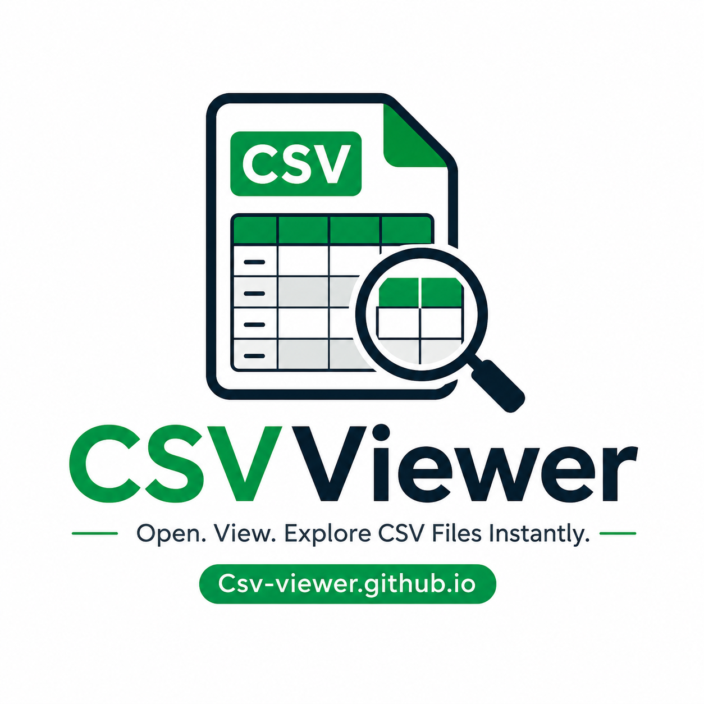

Excel & CSV Editor: View and Edit CSV files online
No file loaded
Click or drag Excel/CSV file to start — old .xls fully supported
This guide explains exactly how to use a free online CSV viewer, what advantages it has over desktop software, and who benefits most from having one bookmarked.
A CSV (Comma-Separated Values) file is a plain-text format where each line represents a row of data and each value is separated by a comma. It's the universal language of data exchange — every database, CRM, bank, e-commerce platform, and analytics tool can export to CSV.
The problem? Opening a raw .csv in a text editor shows an unreadable wall of commas. You need something that renders it as a proper table.
An online CSV viewer is a browser-based tool that parses your .csv file and displays it as a formatted, interactive table — with searchable rows, sortable columns, and the ability to export to other formats — entirely within your web browser.
The key word is online, but the best CSV viewers are actually offline-capable: your file never leaves your device. The parsing happens in-browser using JavaScript, so your customer data, financial records, or private spreadsheets stay private.
Using a browser-based CSV viewer takes under ten seconds:
.csv, .xls, or .xlsx file onto the upload area — or click to browse your files.No sign-up. No waiting for a server. No file size upload warnings.
Zero installation required
Works on any device — Windows, Mac, Linux, iPad, Android — without touching your system settings.
Instant load time
Large CSV files that take 10–20 seconds in Excel often load in under 2 seconds, because the tool is purpose-built for CSVs.
Your data stays on your device
All parsing happens client-side. Critical for GDPR compliance, PII handling, and confidential business data.
Works with old Excel files too
Handles .xls (Excel 97–2003) and .xlsx files — not just plain CSV. One tool covers your full range of exports.
Preserved merged cells and formatting
Viewing .xlsx directly means merged headers, bold columns, and color-coded rows all render correctly.
Instant search across thousands of rows
Filters your entire dataset in real time as you type — no CTRL+F workarounds, no freezing on large files.
Export to multiple formats in one click
Convert CSV → XLSX → PDF without any additional tools.
.csv file to read its contents instantly in an organized table layout — no download or installation needed.
.xls and modern .xlsx Excel files, preserving merged cells and cell formatting.